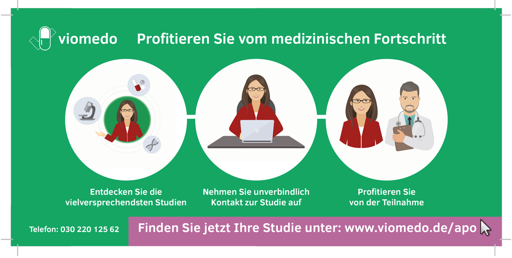
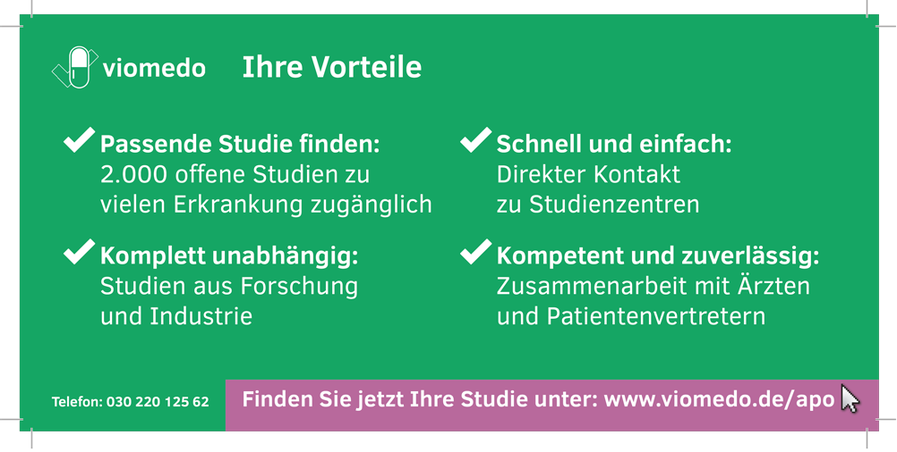

Immer noch können zahlreiche Erkrankungen nicht zufriedenstellend behandelt werden. Die Betroffenen sind darauf angewiesen, dass in klinischen Studien möglichst schnell neue Behandlungsmethoden entwickelt und getestet werden. Häufig mangelt es Ihnen aber an ausreichenden Informationen darüber, ob und wo relevante Studien durchgeführt werden. Der Zugang zu den mehreren tausend klinischen Studien, die jährlich in Deutschland durchgeführt werden, wird dadurch erschwert. Gleichzeitig sind auch studiendurchführende Unternehmen dringend auf passende Studienteilnehmer angewiesen, um neue Behandlungsmethoden sicher entwickeln und erproben zu können.
{% endblock %} {% block solution %}Das Berliner Digital Health Start-Up viomedo hat sich zum Ziel gesetzt, diese Informationslücke zu schließen. Es ermöglicht Betroffenen einen einfachen und direkten Zugang zu relevanten klinischen Studien bei unterschiedlichen Krankheiten. Dadurch wird auch den Studienbetreibern geholfen, da sie zielsicher mit passenden Patienten vernetzt werden. „Damit leisten wir einen immensen Beitrag dazu, dass innovative Wirkstoffe und Therapien schneller erforscht werden“, sagt Alexander Puschilov, Mitgründer von viomedo.
Aktuell sind mehr als 2.400 Studien online eingestellt, die bundesweit nach Kriterien wie Erkrankung und Entfernung durchsucht werden können. Die Übersicht einer ausgewählten Studie versorgt Betroffene u.a. mit Angaben zu Studiendetails und Teilnahmevoraussetzungen. Je nach Studie können Patienten entweder über einen integrierten Fragebogen direkt prüfen, ob sie möglicherweise für die Studie geeignet sind und im Anschluss ihre Daten zur Kontaktaufnahme durch ein Studienzentrum hinterlassen oder via Kontaktformular Kontakt zu einem Studienzentrum in ihrer Nähe aufnehmen, um Fragen zu stellen und eine mögliche Teilnahme zu erörtern. Die Entscheidung zu einer Teilnahme liegt dabei einzig und allein bei den Patientinnen und Patienten.
Lässt sich in der Datenbank einmal keine passende Studie finden, können Betroffene auf den sogenannten „Persönlichen Studienberater“ zurückgreifen, der im zweiwöchigen Rhythmus über Neuigkeiten zu dem individuellen Suchprofil informiert. Die Recherche, Kontaktaufnahme und Registrierung auf viomedo ist für die Nutzer kostenlos.
Einen besonderen Stellenwert nimmt die Datensicherheit ein. Nur unbedingt erforderliche Angaben werden von Studieninteressenten abgefragt, verschlüsselt und ausschließlich in Deutschland auf speziell gesicherten Systemen gespeichert.
Mit der Überwindung des Informationsdefizits bei Betroffenen und der Verbindung mit Studienbetreibern, schafft viomedo mehr Transparenz im Bereich klinischer Studien und einen besseren Zugang zu neuen Behandlungsmöglichkeiten.
{% endblock %} {% block datasets %}Viomedo bezieht Daten zu klinischen Studien u.a. aus einer Reihe öffentlicher und nicht öffentlicher Studienregister, optimiert diese und reichert sie mit zusätzlichen Informationen an. So werden beispielsweise patientenfreundliche Studienbeschreibungen ergänzt. Zusätzlich bietet viomedo studiendurchführenden Unternehmen die Möglichkeit, alle Studien in patientenfreundlicher Form auf viomedo zu veröffentlichen. Für die Suche nach Studien bei Verwendung einer Postleitzahl werden frei verfügbare Geodaten eingesetzt. Darüber hinaus koopertiert das Start-Up bundesweit mit Dachverbänden und Patientenorganisationen, um viomedo bestmöglich auf die Bedürfnisse von Patienten auszurichten.
{% endblock %} {% block benefitters %}Viomedos Idee schafft eine Win-Win-Situation, denn es profitieren sowohl Betroffene als auch Wissenschaft und Forschung. Patientinnen und Patienten können früher innovative Behandlungsmethoden nutzen; durch ihre Teilnahme können Studien schneller abgeschlossen und die Erkenntnisse einer noch mehr Betroffenen zur Verfügung gestellt werden.
{% endblock %} {% block outcome %}Susi leidet schon seit vielen Jahren an Diabetes Typ 2, so wie über sechs Millionen andere Menschen in Deutschland auch. Ihre Zuckerwerte hat sie mal besser und mal schlechter im Griff, aber seit einiger Zeit plagt sie außerdem ein sogenannter diabetischer Fuß. Die diabetesbedingte Durchblutungsstörung und Nervenschädigung ist eine der häufigsten Folgeerkrankungen. Schon kleine Verletzungen oder Druckstellen führen bei Susi zu Infektionen und heilen nur schwer oder gar nicht. Da ihre Diabetes die Wundheilung immer wieder verhindert, fühlt sie sich, als würde sie gegen Windmühlenflügel kämpfen. Das Verbandsmaterial ihres Arztes hilft nur bedingt und sie hat Sorge, dass am Ende nur noch eine Amputation als Ausweg für sie bleiben könnte.
 In der Zeitung liest Susi zum ersten Mal über das Internetportal viomedo, das klinische Studien in Deutschland übersichtlich auflisten soll. Klinische Studien? An so etwas hat sie noch nie teilgenommen und befürchtet, dass die Angaben dazu so wissenschaftlich sind, dass sie am Ende gar nicht wirklich verstehen kann, ob eine Studie für sie in Frage kommt.
Auf der Seite des Berliner Start-Ups gibt sie als erstes ihre Erkrankung – Diabetes Typ 2 – und ihre Postleitzahl ein, um die Datenbank zu durchsuchen. Im nächsten Schritt wird sie nach 12 krankheitsspezifischen Parametern gefragt, die grundsätzliche Ein- und Ausschlusskriterien für einige Studien darstellen, beispielsweise Alter oder bereits bestehende Folgeerkrankungen der Diabetes. Fragen, die Susi nicht beantworten möchte, kann sie dabei überspringen und erhält im Anschluss eine Übersicht der Studien in Deutschland, die auf ihre Angaben passen. Auf einen Blick sieht sie die Entfernungen zum Studienort, die Patientenanzahl und ob eine Teilnahme aktuell oder bald möglich ist. Zusätzlich kann sie die Studienorte, bei denen die Anreise zu groß wäre, aus der Suche ausschließen. Viomedo schlägt ihr aber auch weitere Studien abseits davon vor, die für sie ebenfalls relevant sein könnten.
Susi sucht sich alle Studien heraus, die nicht weiter als 300km entfernt sind und durchstöbert die Liste. Unter den Studiendetails findet sie Angaben zur Studie, ihren Zielen, der Durchführung und Teilnahmevoraussetzungen. So kann sie gleich die wichtigsten Faktoren abgleichen. Außerdem beantwortet der Q&A-Bereich im unteren Teil der Seite grundsätzliche Fragen zur Studienteilnahme. Für Susi, die noch nie an einer klinischen Studie teilgenommen hat, lassen sich hier schon einmal wertvolle Antworten finden. Zum Beispiel, wie eine Studienteilnahme abläuft, welche Risiken es gibt und was mit ihren Informationen geschieht. Auch das zusätzliche Material über Diabetes Typ 2 und den aktuellen Forschungsstand, das ihr kostenlos von viomedo zur Verfügung gestellt wird, liest sie aufmerksam durch, denn es hilft ihr zu verstehen, warum und wie die klinischen Studien durchgeführt werden. Zum Glück sind alle diese Informationen verständlich formuliert und gut erklärt. Ihre Befürchtung, die Studien seien kompliziert und wissenschaftlich beschrieben, hat sich nicht bewahrheitet.
 Eine Studie zur Wundversorgung am diabetischen Fuß scheint auf den ersten Blick ein sehr guter Treffer zu sein. Mithilfe des Kontaktformulars wendet sie sich deshalb schriftlich an den Ansprechpartner der Studie. Dadurch, dass sie in keiner Weise zu einer Teilnahme verpflichtet ist und diese auch jederzeit ohne Angabe von Gründen beenden könnte, möchte sie sich zu dieser Studie genauer informieren. Zusätzlich trägt sie sich für den persönlichen Studienberater von viomedo ein – einen individuellen Newsletter, der sie alle zwei Wochen über aktuelle Studien informiert, die auf ihre Suche zutreffen.
Susi hat sich schlussendlich für die Teilnahme an der Studie zur Wundversorgung am diabetischen Fuß entschieden, nach einem persönlichen Gespräch vor Ort und positiver Voruntersuchung. So kann sie sich schon früher mit innovativen Methoden behandeln lassen und ermöglicht damit gleichzeitig, dass zukünftig andere Betroffene von erfolgreichen Studienergebnissen profitieren.
{% endblock %} {% block sources %}Offizielle Seite:
https://www.viomedo.de/
Interview mit Alexander Puschilov:
https://www.viomedo.de/ueber-uns/presse